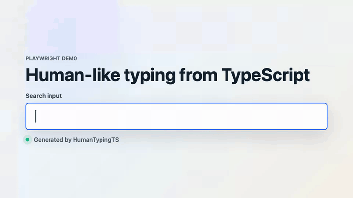

· Playwright · BunRealistic human typing simulation for TypeScript and Playwright. Variable timing, neighbor-key errors, swaps, backspacing, fatigue, and bigram speedups.
$ bun add humantyping-ts

Real output from the library — pauses, typos, corrections, and all.
Default page.fill() dumps the entire string in one frame. Real keyboards don't do that.
// One frame, no variance, no errors.
// Cloudflare, reCAPTCHA, and
// behavioral fingerprinters notice.// Per-key delays from a Markov model,
// occasional typos with backspace
// corrections, and bigram speedups.Per-keystroke delays sampled from a normal distribution around your target WPM, with std deviation that compounds realistically.
Mistypes are biased toward physically adjacent keys on QWERTY/AZERTY/Dvorak. Some get noticed and corrected with backspace, others don't.
Common bigrams speed up. Complex words and composed accents slow down. The model gets tired over long passages.
Works with locators, element handles, or any object exposing a Playwright-compatible keyboard interface.
Use MarkovTyper + runMonteCarlo to simulate timings without a browser. Useful for tests and analytics.
Playwright is an optional peer dependency. Pure-simulation users pay nothing for browser machinery.